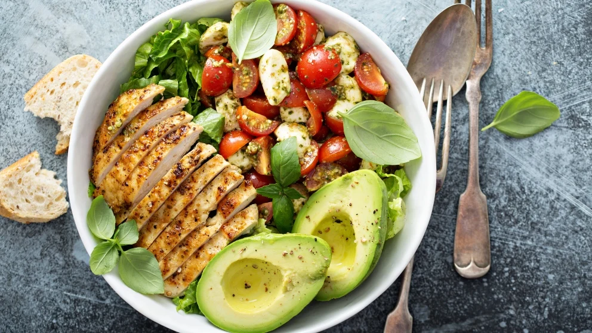
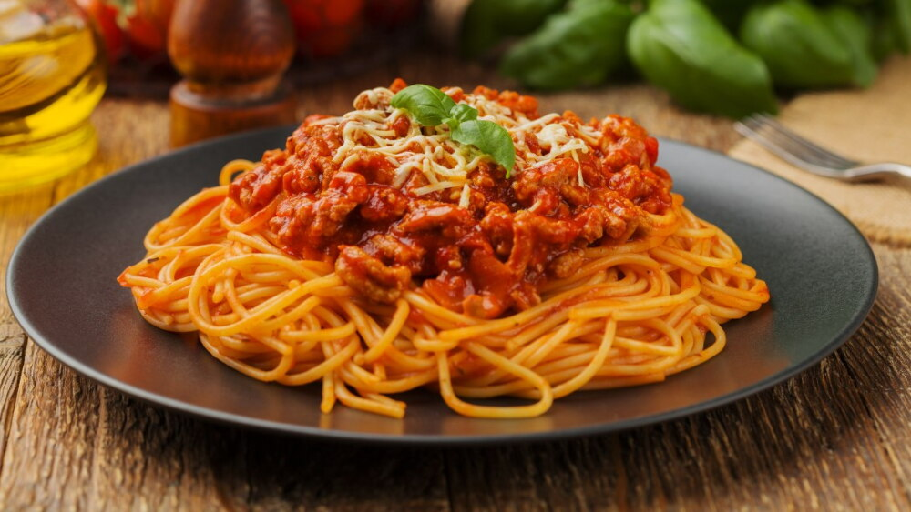

Members:
- Javier Bernal Hernández
- Jorge Herrera Hernández
- Alberich D. Nieves Hernández
- Osiris W. Tellez Morales
Members:

Preparation time: 15 to 20 minutes
Number of servings: 2
Approximate cost: $65.00 MXN to $85.00 MXN
Ingredients
| Ingredient | Amount |
|---|---|
| 1 Cooked and shredded chicken breast | 150 grams |
| 1 Ripe avocado diced | 150 grams |
| 2 Cups of chopped lettuce or spinach | 2 Cups |
| 1 Chopped tomato | 1 Tomato |
| Juice of 1 lemon, salt, pepper, and olive oil | To taste |
| For the chicken: 1 chicken breast, salt, black pepper, garlic powder, and a drizzle of olive oil. | To taste |
Instructions
Nutritional value (per serving)
| Nutrient | Amount |
|---|---|
| Energy | 350 kcal |
| Protein | 32g |
| Fat | 18g |
| Carbohydrates | 12g |
| Fiber | 5g |
| Sodium | 350 mg |

Preparation time: 15 minutes
Number of servings: 2
Approximate cost: $25.00 MXN to $40.00 MXN
Ingredients
| Ingredient | Amount |
|---|---|
| 10 Tomatoes halved | 10 |
| 2 Medium zucchinis | 2 |
| 1 Minced garlic clove | 1 |
| 2 Tablespoons of olive oil | 2 |
| Salt and oregano | To taste |
| Spaghetti | 1-2 packs |
| Ground beef | 30-40 pesos worth |
Instructions
Nutritional value (per serving)
| Nutrient | Amount |
|---|---|
| Energy | 140 kcal |
| Protein | 3g |
| Fat | 10g |
| Carbohydrates | 12g |
| Fiber | 4g |
| Sodium | 200 mg |
Preparation time: 15 minutes
Number of servings: 1 to 2
Approximate cost: $20.00 MXN to $30.00 MXN
Ingredients
| Ingredient | Amount |
|---|---|
| 1 Cup of broccoli cut into small florets | 1 Cup |
| 2 Eggs | 2 |
| 1 Teaspoon of olive oil | 1 |
| Salt, pepper, and shredded cheese | To taste |
Instructions
Nutritional value (per serving)
| Nutrient | Amount |
|---|---|
| Energy | 210 kcal |
| Protein | 14g |
| Fat | 14g |
| Carbohydrates | 6g |
| Fiber | 2.5g |
| Sodium | 320 mg |
Preparation time: 15 minutes
Number of servings: 2 to 3
Approximate cost: $80.00 MXN to $110.00 MXN
Ingredients
| Ingredient | Amount |
|---|---|
| 1 Large cucumber | 1 |
| 150 g of smoked salmon strips | 150 g |
| 3 Tablespoons of light cream cheese (Philadelphia low fat) | 3 Tablespoons |
| Fresh chopped dill or a squeeze of lemon | To taste |
Instructions
Nutritional value (per serving)
| Nutrient | Amount |
|---|---|
| Energy | 230 kcal |
| Protein | 16g |
| Fat | 15g |
| Carbohydrates | 7g |
| Fiber | 1g |
| Sodium | 650 mg |

Preparation time: 15 minutes
Number of servings: 3
Approximate cost: $35.00 MXN to $50.00 MXN
Ingredients
| Ingredient | Amount |
|---|---|
| 1 Cup of cooked chickpeas | 1 Cup |
| Chopped lettuce, 1 cucumber, and 1 red bell pepper chopped | 1 of each |
| 1/2 Avocado sliced | 1/2 |
| Olive oil, salt, pepper, cumin, and paprika | To taste |
| Lemon juice and a touch of mustard | To taste |
| Grilled chicken breast | Half breast |
Instructions
Nutritional value (per serving)
| Nutrient | Amount |
|---|---|
| Energy | 280 kcal |
| Protein | 9g |
| Fat | 14g |
| Carbohydrates | 32g |
| Fiber | 8g |
| Sodium | 250 mg |